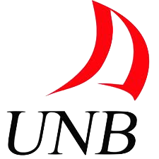

Software Engineering
University of New Brunswick
The UNB Bachelor of Science in Software Engineering (BScSwE) program is a joint program of the Faculty of Computer Science and the Dept. of Electrical and Computer Engineering. The BScSwE program is one of 14 Software Engineering programs accredited by the Canadian Engineering Accreditation Board (CEAB), and the only CEAB accredited Software Engineering program in Atlantic Canada. [ source: www.unb.ca ]